Vita associativa
Momenti associativi
Rivivi alcuni degli incontri, delle fiere, delle dimostrazioni e delle giornate trascorse insieme. Seleziona una fotografia per sfogliare la raccolta.
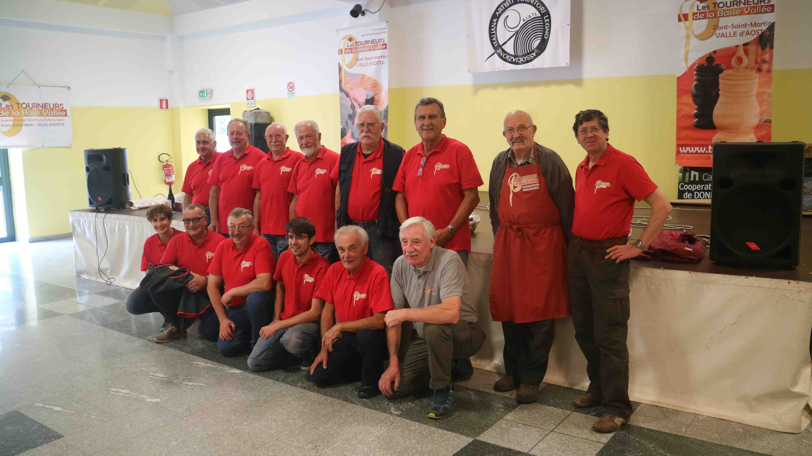

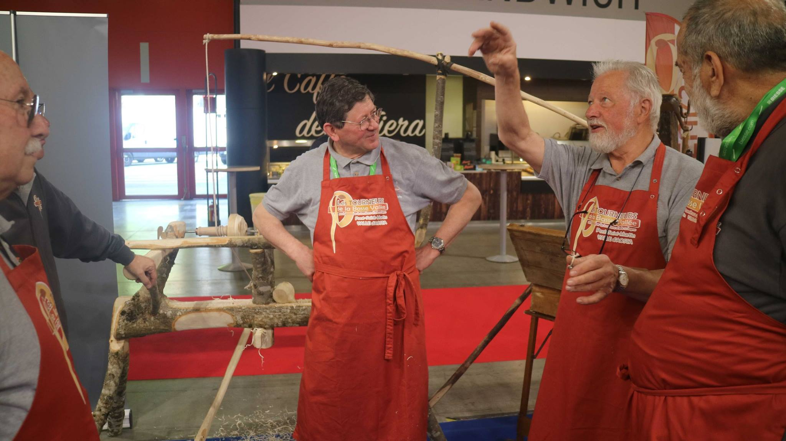
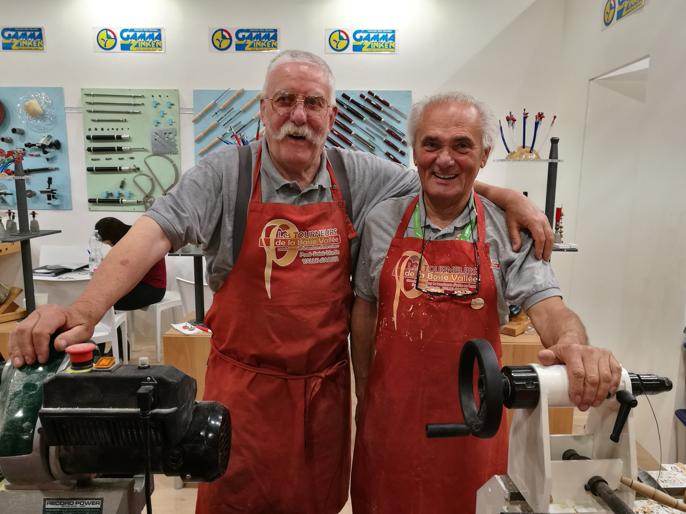
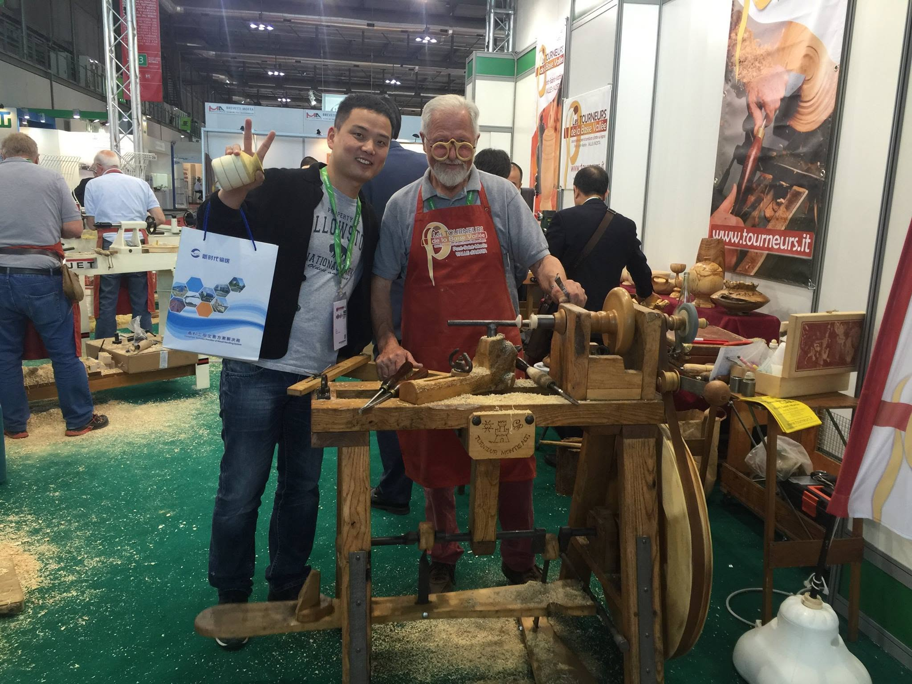
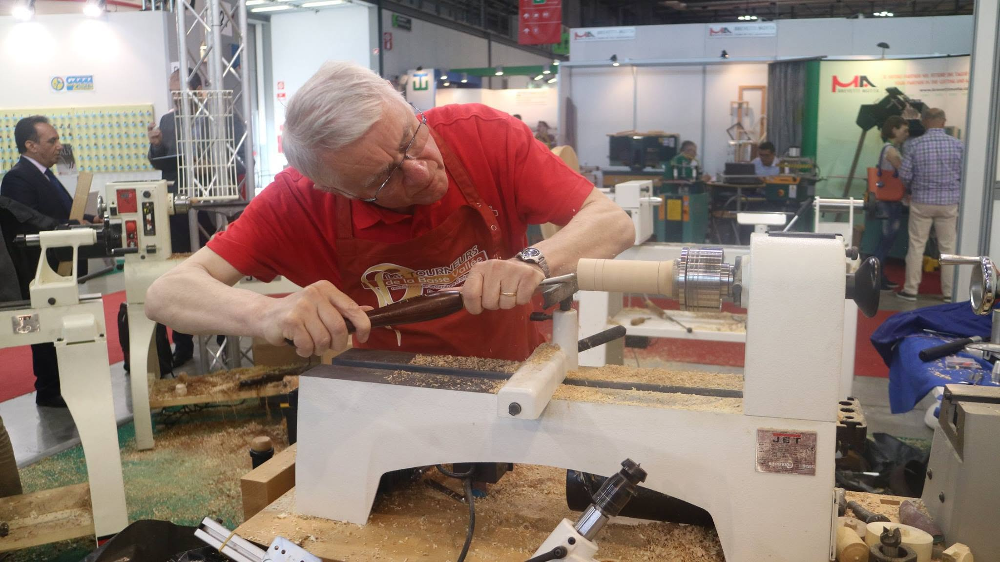
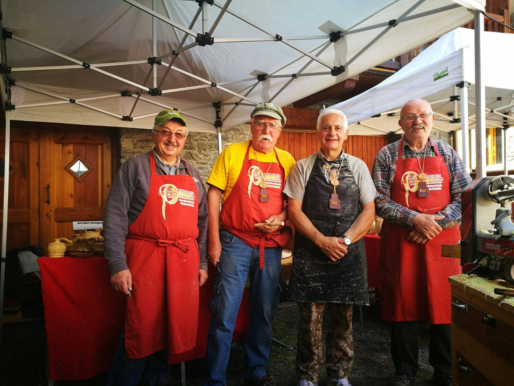
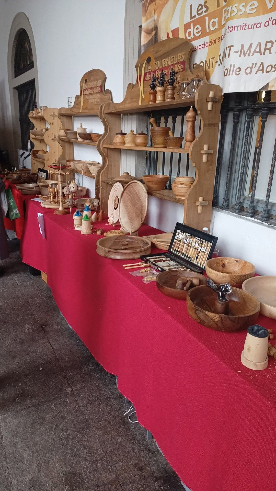

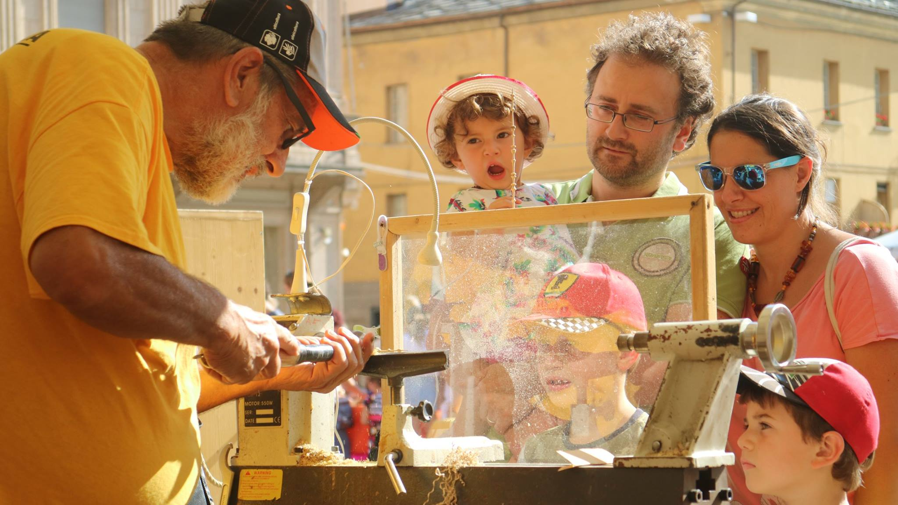

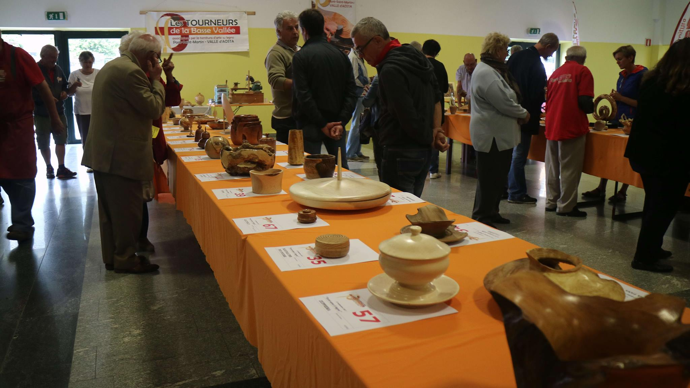
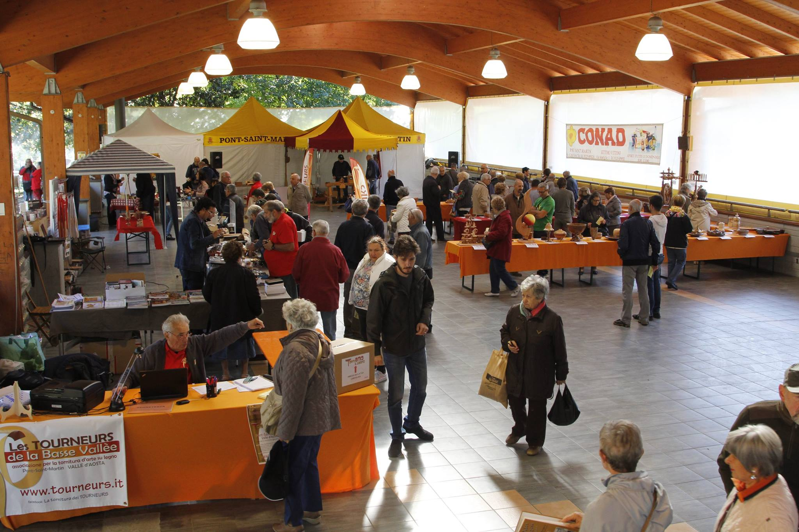
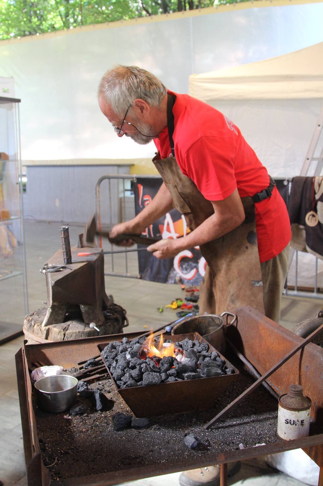
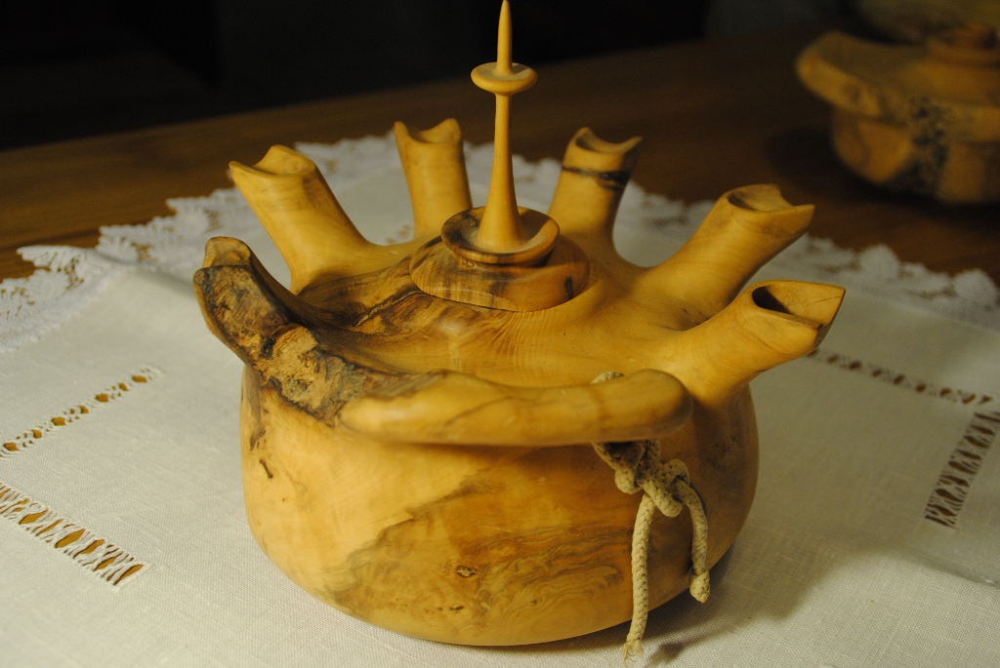

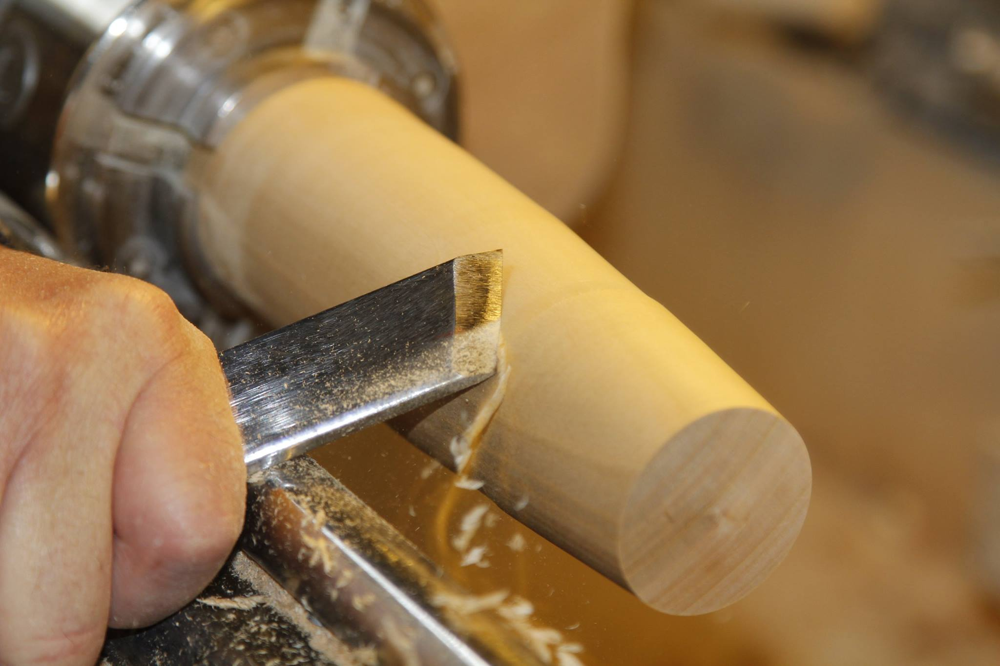
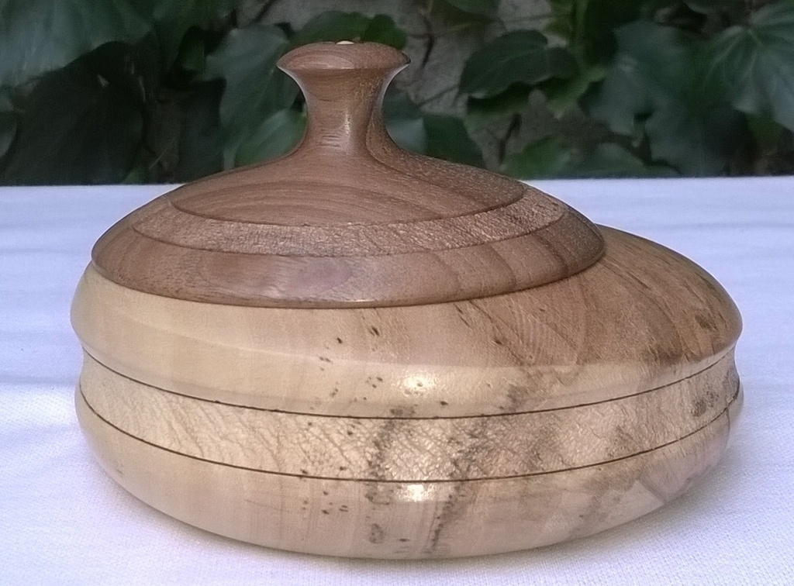